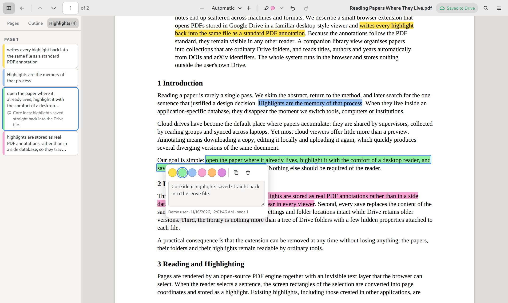
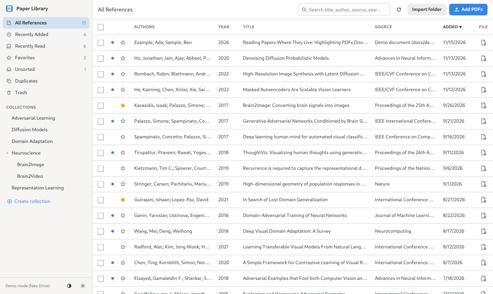
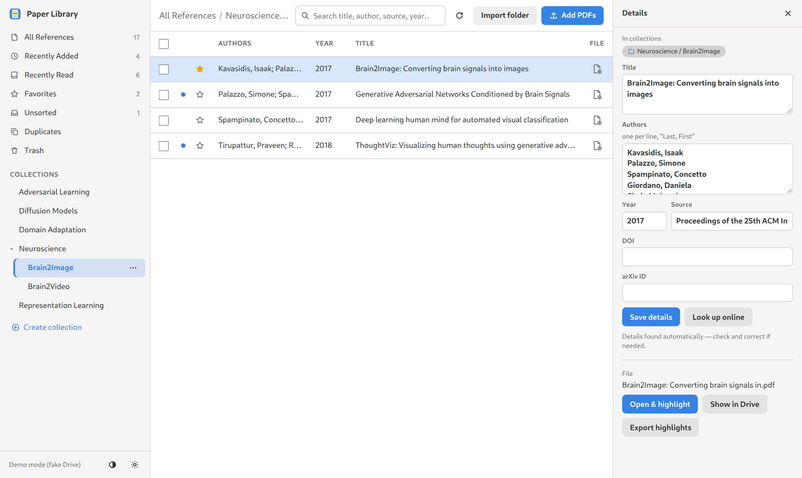
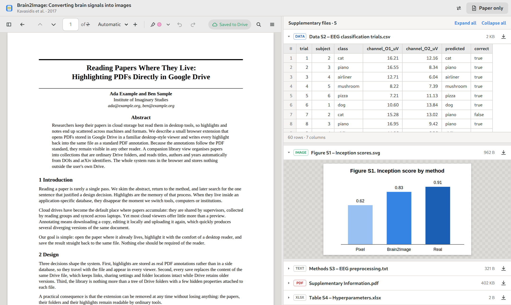

Read, highlight and organise papers in your own cloud
A Chrome extension with a desktop-style PDF reader and a Mendeley-style library for the research papers in your Google Drive or OneDrive. Highlights are saved inside the PDF, on the same file.

The only official source is github.com/prajwalsingh/paper-library. Paper Library is not on the Chrome Web Store or anywhere else; copies offered elsewhere are unofficial, so please don't install them. Why GitHub only?
A real reader, and a library made of plain folders
Everything stays ordinary files and folders in your cloud. If you uninstall Paper Library, your papers, folders and highlights are all still there.
- Desktop look and feelInspired by GNOME Document Viewer: page thumbnails, table of contents, find (Ctrl F) and zoom.
- Highlight in six coloursSelect text and pick a colour, or press H for the highlighter tool.
- Notes on highlightsClick any highlight to add a note, change its colour, copy its text or delete it. Undo and redo work for everything.
- Saves itself, into the same fileA few seconds after you stop, the PDF is saved back to the same cloud file as a new version. Links, sharing and folder stay the same.
- Standard PDF annotationsHighlights show up in Adobe Reader, Evince/Okular, Zotero, Chrome's viewer and Drive's preview, and ones made there can be edited here.
- Export to MarkdownTitle, authors, DOI/arXiv link, then every highlight in reading order with page, colour and note. Ready for Obsidian, Notion or a literature review.
- Safe savingIf the file changed elsewhere since you opened it, you're asked before anything is overwritten.
- Light, dark or system themePlus a separate Night mode that darkens the PDF pages themselves.
- Collections are real foldersCollections and sub-collections are folders under one
Paper Libraryfolder in your Drive or OneDrive. - Details filled in automaticallyAuthors, year, title and source come from the paper's DOI or arXiv ID via the free Crossref and arXiv databases. You can edit everything.
- Import PDFs or a whole folderA folder becomes a collection and its subfolders become sub-collections.
- Drag and dropDrag papers onto a collection to move them; Also add to… lists a paper in a second collection. Drag collections to reorganise them.
- See where a paper livesClick any paper and the details panel lists its collections, while the sidebar highlights them. Click one to jump there.
- Quick viewsRecently Added, Recently Read, Favorites, Unsorted, Duplicates and Trash, with Restore, Delete forever and Empty Trash.
- Search and sortSearch across title, authors, source and year; sort by any column.
- Supplementary reading New in 2.2Attach a paper's supplementary files (PDFs, figures, CSV/TSV data, text, videos, anything) and read them side by side with it. Open several at once, resize each, and highlight supplementary PDFs too.
- Google Drive or OneDrivePersonal, work or school accounts. Switch any time in Settings; each cloud keeps its own library.



Up and running in about 10 minutes
Paper Library is installed straight from GitHub (Chrome calls it an "unpacked" extension). Most of the time goes into the one-time sign-in setup. Pick your cloud and follow along.
Get the code with git
Clone the repository into a folder you'll keep (for example ~/Apps). Git is what keeps your copy in sync later: one git pull and you have the newest version, in the very folder Chrome already uses. No downloading and replacing files by hand.
git clone https://github.com/prajwalsingh/paper-library.gitNo git yet? Install it from git-scm.com (on Linux: your package manager, e.g. sudo apt install git). Keep the folder after installing: Chrome runs an unpacked extension straight from it.
Add it to Chrome
- Open
chrome://extensionsand switch on Developer mode (top right). - Click Load unpacked and select the folder that contains
manifest.json. - Paper Library appears with this ID, the same on every computer:
hadmfffnocpeglonjioajbpdfbkbjekf - Click the puzzle-piece icon in Chrome's toolbar and pin Paper Library.
Also works in other Chromium browsers with extensions: Edge, Brave, Chromium.
Connect your Google Drive (one time)
Google only lets an app use your Drive if it has its own sign-in ID (an OAuth client ID). With Paper Library you create your own, free, so the Drive permission goes to your own Google project and nobody else's.
- Create a Google Cloud project and enable the Google Drive API.
- Create an OAuth client of type Web application with this redirect URI:
https://hadmfffnocpeglonjioajbpdfbkbjekf.chromiumapp.org/ - Click the pinned icon, choose Google Drive, paste the client ID and click Sign in with Google.
Same idea with Microsoft: you register your own free app in Microsoft Entra, so the OneDrive permission goes to your own app registration. Works with personal, work and school accounts. No client secret is needed.
- Entra → App registrations → New registration.
- Account types: any organizational directory and personal Microsoft accounts.
- Redirect URI, type Single-page application:
https://hadmfffnocpeglonjioajbpdfbkbjekf.chromiumapp.org/ - Copy the Application (client) ID, click the pinned icon, choose OneDrive, paste it and click Sign in with Microsoft.
Save your client ID somewhere private (password manager, private note). On a new computer you only install the extension and paste the same ID. Don't make it public: it isn't a password, but it identifies your project.
Use it
- Toolbar icon opens the library. On a Drive file page, it opens that PDF instead.
- On drive.google.com, open or select a PDF and click the blue Open in Paper Library button.
- Bring your papers in: click Import folder and pick a folder of PDFs.
- Switch clouds any time in Settings → Switch to …. Nothing is copied or deleted.
Updating
Updates never install themselves, so you decide when. Check your version in chrome://extensions; if it's older than the latest:
- In your Paper Library folder, get the new code:
git pull - Click ⟳ reload on the Paper Library card in
chrome://extensions(Chrome only re-readsmanifest.jsonthen), and reopen Paper Library tabs.
Your library, highlights and client IDs stay exactly as they are.
No data sharing, and you can check it
Privacy here isn't a promise you have to trust: it's enforced by Chrome, and you can verify every part of it.
No server, no tracking
No analytics and no backend. The author receives nothing. Papers, highlights and details live only in your own cloud.
Your own sign-in
Access goes to a Google project or Microsoft app that you create and control. Revoke it any time in your account's permissions page.
A network lock
The extension's Content Security Policy lists the only websites it may contact. Chrome blocks everything else before it leaves your computer.
| Allowed destination | Why |
|---|---|
www.googleapis.com oauth2.googleapis.com | Google Drive and Google sign-in |
graph.microsoft.com login.microsoftonline.com | OneDrive (Microsoft Graph) and Microsoft sign-in |
api.onedrive.com *.1drv.com *.sharepoint.com *.microsoftpersonalcontent.com | Microsoft's storage servers. OneDrive hands out short-lived download/upload links whose server name varies per account, so these are allowed by Microsoft domain. |
api.crossref.org export.arxiv.org | Paper details, looked up by DOI, arXiv ID or title only (never the PDF) |
Try the lock
Type any address and see whether Paper Library could connect to it.
Check it yourself
| How | What you'll see |
|---|---|
Open manifest.json → content_security_policy | The allowed websites after connect-src |
| Library page → right-click → Inspect → Network | Requests only to your cloud, Crossref and arXiv |
In that Console, run fetch('https://example.com') | "Refused to connect because it violates the document's Content Security Policy" |
python3 scripts/audit.py | Permissions, the lock, and every website and network call in the code |
python3 scripts/audit.py --libs | The bundled PDF.js and pdf-lib are byte-for-byte the official releases |
git fetch && git status | "up to date … nothing to commit": your copy is exactly the published code |
More: Security · Privacy policy. This website itself also loads nothing from other sites.
Plain files in your cloud, a smart page in your browser
🖍️ Viewer
PDF.js draws each page plus an invisible text layer you select with. Existing highlights become an editable overlay. On save, pdf-lib writes them back as standard /Highlight annotations with "multiply" blending, so text stays crisp like under a real highlighter, and the bytes go to the same file ID.
📚 Library on Drive
Collections are Drive folders. Paper details are hidden Drive properties on each PDF, so they move with the file. A paper in two collections uses a Drive shortcut (Drive allows one folder per file). Favorites use Drive's star; Trash is Drive's trash.
📚 Library on OneDrive
Same layout. OneDrive has no hidden file properties, shortcuts or stars for apps, so details, favourites and "also in this collection" live in one small file, Paper Library/.paper-library.json, keyed by each file's OneDrive ID (which survives moves and renames). Trash is a hidden .trash folder.
🔎 Automatic details
The first page is scanned for a DOI or arXiv ID, which is looked up in Crossref or arXiv. For papers already in your cloud, PDF.js downloads only the first part of the file.
🔐 Sign-in
chrome.identity.launchWebAuthFlow with your own OAuth client. Pick any Google account; the short-lived token stays in your browser.
Microsoft's authorization code + PKCE flow with your own app registration: no client secret, and tokens stay in Chrome's session storage, cleared when Chrome closes.
Shortcuts
| Viewer | |
|---|---|
| H | Highlighter tool |
| Ctrl S | Save now |
| Ctrl Z / Ctrl Shift Z | Undo / redo |
| Delete | Delete selected highlight |
| Ctrl F | Find |
| Ctrl + − 0, Ctrl+wheel | Zoom |
| Alt ← / Alt → | Back / forward after a link |
| F9 | Sidebar |
| Library | |
|---|---|
| / | Search |
| Enter | Open selected paper |
| Delete | Move to Trash (in Trash: delete forever) |
| Ctrl A | Select all |
| Shift+click | Select a range |
| Esc | Clear selection |
Questions and limitations
GoogleWhy do I have to create a Google Cloud project?
So the Drive permission belongs to you. Reading and updating any file in your Drive needs Google's full Drive permission. With your own client ID that permission is granted to your own project, nobody else can use it, and Google doesn't need to review a shared app.
SecurityWhy isn't it on the Chrome Web Store?
On purpose. Store extensions update automatically, so a hijacked publisher account could push malicious code to every user. A GitHub install changes only when you update it yourself. See SECURITY.md.
Google"Access blocked: … admin" with a university or work account?
Your Workspace admin blocks unverified apps. Create the Cloud project inside your organisation with Internal audience, or ask IT to allow your client ID. See the troubleshooting guide.
GoogleCan several people share one client ID?
Yes, up to 100. Add their Google accounts as test users. Each person's files still stay in their own Drive. See sharing with lab mates.
OneDriveCan I use Google Drive and OneDrive at the same time?
One at a time. Settings → Switch to … changes which library you see. Each cloud keeps its own library, client ID and sign-in, so switching back is instant. Papers are not copied between clouds.
OneDrive"Need admin approval" with a university or work Microsoft account?
Your organisation only allows apps an admin has approved. Use a personal Microsoft account, or ask IT to approve your app registration. See OneDrive troubleshooting.
OneDriveDoes "Delete forever" skip the OneDrive recycle bin?
Paper Library asks OneDrive to delete permanently. Microsoft allows this for some account types only; if yours doesn't, you get a prompt with a button to open the OneDrive recycle bin and empty it yourself (otherwise OneDrive clears it after about 30 days).
GeneralDoes it work offline?
No. Files are read from and saved to your cloud.
GeneralWhat happens if I uninstall it?
Nothing is lost. Your papers, folders and highlights are ordinary files in your cloud, and the highlights open in any PDF reader.
No question matches. Ask on GitHub.
Limitations
- Encrypted or password-protected PDFs open read-only.
- Saving rewrites the PDF file, which invalidates digital signatures.
- View-only Drive files can be highlighted, but have to be saved with Menu → Save a copy to Drive.
- Only text highlights can be edited. Other annotations (ink, sticky notes) are shown and kept as they are.
- Automatic details work best for papers with a DOI or arXiv ID. Others fall back to the PDF's own text; you can always fix them in the details panel.
Release history
Installed a while ago? Compare with the version in chrome://extensions, then update.